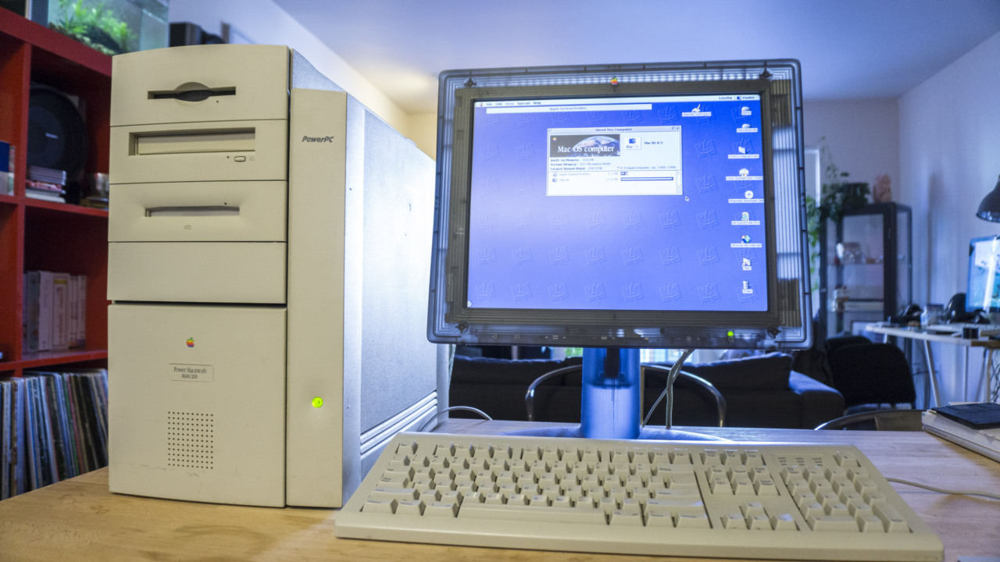
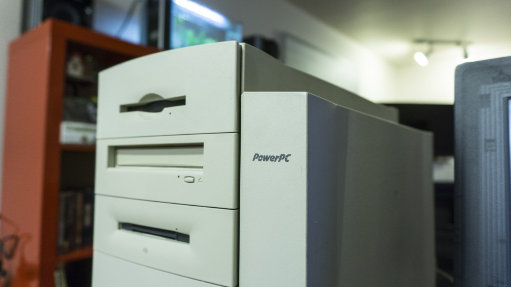
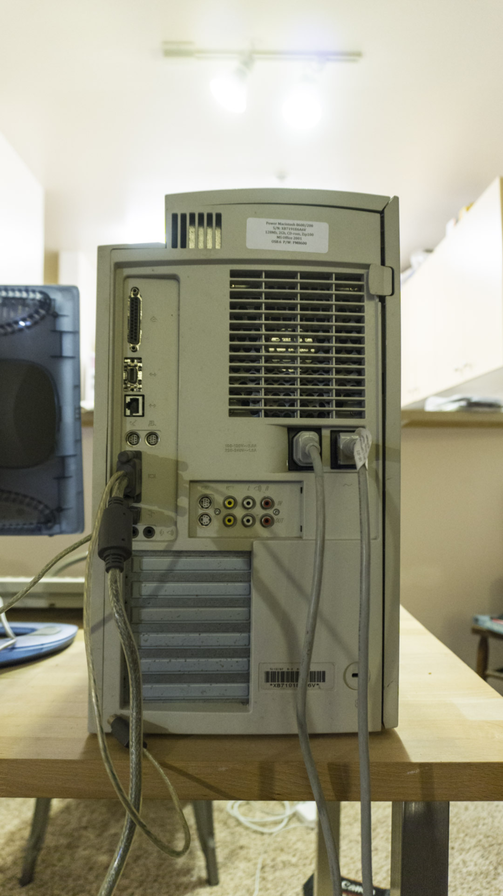

PowerMac 8600/200 Circa 1997
I bought this machine specifically to run Apple Rhapsody, which only runs on 8500, 8600, 9500, and the 9600.This machine has proven to be a problem child, First the CPU daughter card can to easily get dislodged causing system crashes (i mean try running a machine then all of a sudden there is no CPU!) It has an overly complex SCSI chain that the computer itself can’t seem to keep inline - so i constantly get bus errors during booting. Its case its really easy to open but it needs to be the number of times i have to open it up and dick around.
Although announced in February 1997, It was not until June that the 8600 actually shipped in bulk. It came in the same innovative case design as the 9600, and ran on a 200 MHz 604e. It included an internal Zip drive (a Power Mac first). It also included video input and output. The 8600 used the Nitro motherboard, as did its predecessor, the 8500. The 8600 initialy sold for $2,700. In August, Apple announced “speed bumped” versions of the 8600 with a 250 or 300 MHz “Mach 5” 604e. Like its predecessor, the 8600/300 did not ship for several months after it was announced due to supply problems. The 8600 was discontinued in early 1998.